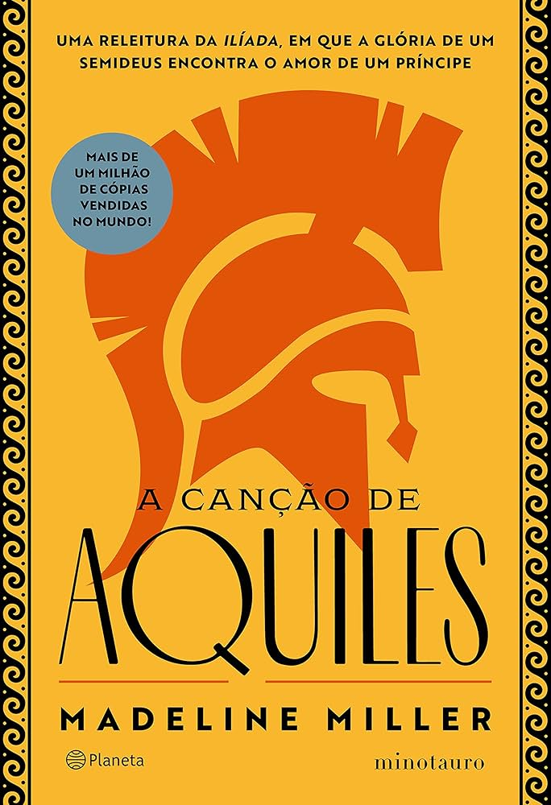

Ancient Greece, the home of gods and kings. Patroclus, a young and shy prince, ends up exiled to the kingdom of
Phthia after a tragic event. In his new home, far from everything he knew, he meets Achilles – son of the king and the goddess Thetis. Achilles is everything Patroclus is not: extraordinary in every way, beautiful, and with a bright future already outlined by a prophecy. Despite these differences, they develop a deep connection and become inseparable. For years, they spend their lives like this, side by side, growing up together. And, when they become young adults, this relationship changes into something even more intense. The idyllic life they lead is interrupted when news arrives that Helen of Sparta has been kidnapped and that the Greek men must immediately set sail for Troy to free her. Achilles sees in this war the perfect opportunity to finally fulfill his heroic destiny and decides to leave the court behind and go to battle. Patroclus, moved by the love he feels for Achilles, accompanies him. However, little do they know that, in addition to glory and love, destiny also has a great deal of sacrifice in store for them. Based on Homer's Iliad, The Song of Achilles has already enchanted hundreds of thousands of readers around the world. It is a story about the power of love and the force of destiny, but also about the great battles between gods and kings, about peace and glory, about eternal fame and the secrets of the human heart.
Madeline Miller grew up in New York City and Philadelphia. She attended Brown University, where she earned her BA and MA in Classics. She has taught and tutored Latin, Greek, and Shakespeare to high school students for over fifteen years. She has also studied at the University of Chicago’s Committee on Social Thought, and in the Dramaturgy department at Yale School of Drama, where she focused on the adaptation of classical texts to modern forms. The Song of Achilles, her first novel, was awarded the 2012 Orange Prize for Fiction and was a New York Times Bestseller. Miller was also shortlisted for the 2012 Stonewall Writer of the Year. Her second novel, Circe, was an instant number 1 New York Times bestseller, and won the Indies Choice Best Adult Fiction of the Year Award and the Indies Choice Best Audiobook of the Year Award, as well as being shortlisted for the 2019 Women's Prize for Fiction. Circe also won The Red Tentacle Award, an American Library Association Alex Award (adult books of special interest to teen readers), and the 2018 Elle Big Book Award. It is currently being adapted for a series with HBO Max. Miller's novels have been translated into over twenty-five languages including Dutch, Mandarin, Japanese, Turkish, Arabic and Greek, and her essays have appeared in a number of publications including the Guardian, Wall Street Journal, Washington Post, Telegraph, Lapham's Quarterly and NPR.org. She currently lives outside Philadelphia, Pennsylvania.